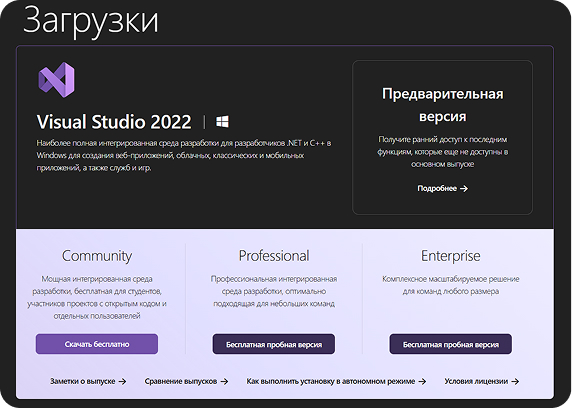
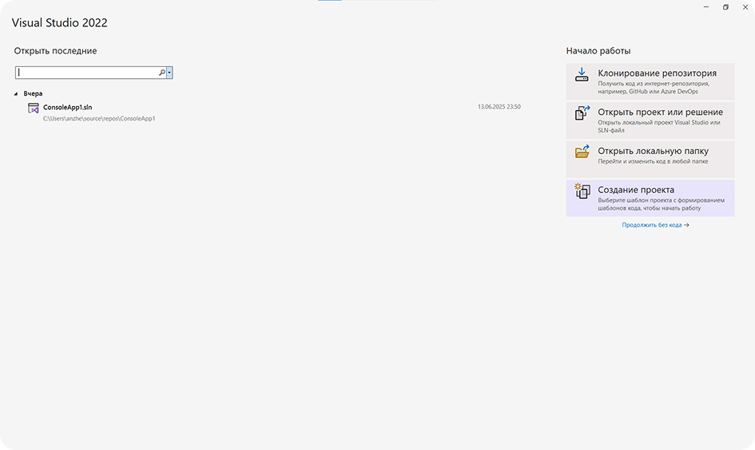
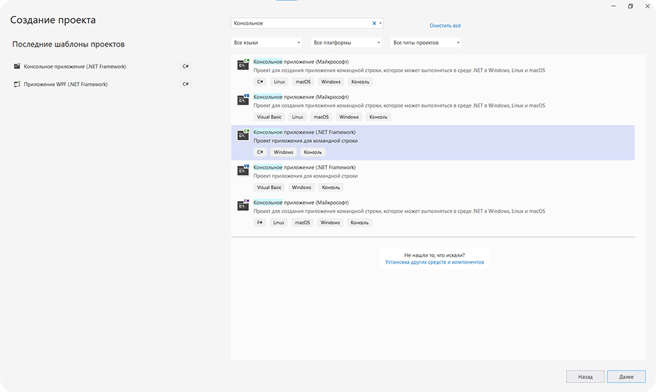
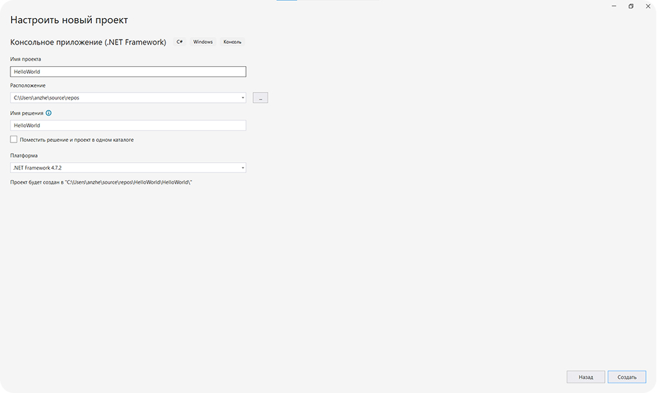

Информация о курсе
Интерактивный электронный учебник «Программирование на языке C#» — это удобный и доступный инструмент для тех, кто хочет научиться программировать с нуля, а также для тех, кто уже имеет опыт и хочет систематизировать или углубить свои знания. Он создан специально для студентов IT-направлений, начинающих и продолжающих разработчиков, а также всех, кто хочет уверенно чувствовать себя в программировании на C#.
Учебник поможет вам шаг за шагом разобраться в основах программирования, научит создавать простые программы и подготовит к более сложным темам — таким как объектно-ориентированное программирование и работа с пользовательским интерфейсом.
В отличие от сухих справочников и перегруженной технической документации, наш учебник написан простым языком и делает упор на основы, которые нужны каждому разработчику. Всё изложено поэтапно: вы изучаете теорию, сразу применяете её на практике и проверяете свои знания с помощью встроенных тестов и заданий.
При этом вы можете свободно выбирать нужные вам темы и уроки, не обязательно проходить весь курс последовательно. Это делает учебник удобным не только для новичков, но и для продвинутых пользователей, которым важно быстро находить нужный материал и углублять знания в конкретных разделах.
Кому подойдёт этот учебник
- студентам колледжей и вузов, изучающим программирование;
- преподавателям, которым нужен современный учебный ресурс;
- начинающим программистам, которые хотят разобраться в C# самостоятельно;
- опытным пользователям, желающим освежить знания или перейти с других языков программирования;
- всем, кто интересуется IT и хочет начать с чего-то понятного.
Зачем нужен этот учебник
Этот учебник:
- объясняет базовые понятия программирования на C# без перегрузки сложной теорией;
- помогает выработать алгоритмическое мышление и научиться мыслить как программист;
- развивает практические навыки: вы будете сразу писать код и видеть результат;
- подходит для самостоятельного обучения и работы в классе;
- удобен для повторения и углубления отдельных тем;
- готовит базу для изучения таких тем, как работа с графикой, базами данных и разработка приложений на платформе .NET.
Что входит в курс
1. Введение в C#
- Что такое C#, где он используется и чем отличается от других языков.
- Как установить и настроить Visual Studio.
- Как создать свою первую программу.
2. Основы языка C#
- Типы данных и переменные.
- Операторы и выражения.
- Условия, циклы и другие управляющие конструкции.
3. Объектно-ориентированное программирование (ООП)
- Классы, объекты и методы.
- Наследование, инкапсуляция, полиморфизм.
- Интерфейсы и абстрактные классы.
4. Работа с данными
- Массивы и коллекции.
- Строки и текстовая информация.
- Работа с файлами и потоками.
1.1 История и особенности языка
Краткая история языка C# (создатели, год появления, развитие)
C# («Си Шарп») — объектно-ориентированный язык программирования, созданный компанией Microsoft в рамках платформы .NET.
Разработка велась с 1998 по 2002 год под руководством Андерса Хейлсберга — известного разработчика Turbo Pascal и Delphi. Вместе с ним работали Скотт Вильтаумот и другие инженеры Microsoft. Целью было создание современного, безопасного и удобного языка, сочетающего лучшие черты C++, Java и других языков, но при этом лишённого их недостатков.
C# задумывался как альтернатива Java, на который у Microsoft не было лицензии. При этом C# стал более тесно интегрирован с Windows и экосистемой Microsoft.
C# официально был представлен в 2002 году, и с тех пор язык активно развивается. Он стал частью платформ .NET Framework, а затем — кроссплатформенных решений .NET Core и .NET 5+, что позволило запускать программы на Windows, Linux и macOS.
Название «C#» символизирует следующий шаг в развитии C-подобных языков. Решётка (#) визуально напоминает четыре знака «плюс» — как бы продолжение C++.
Отличия C# от других языков (Java, C++, Python)
C# унаследовал синтаксис и концепции от C++ и Java, но при этом имеет собственную философию и функциональность:
- Как и Java, C# предлагает автоматическое управление памятью через сборщик мусора.
- В отличие от C++, C# исключает ручное управление памятью и потенциально опасные конструкции, повышая безопасность кода.
- По сравнению с Python, C# — строго типизированный язык, что предотвращает ошибки уже на этапе компиляции.
- C# предлагает современные средства разработки, такие как LINQ, async/await, делегаты и обобщённые типы, чего нет в Java и C++ в базовой поставке.
Синтаксис C# будет знаком программистам на C++ и Java, но это не делает языки одинаковыми. Важно изучать особенности C# отдельно — он имеет собственные принципы и преимущества.
| Язык | Основные черты | Что делает C# уникальнеым |
|---|---|---|
| С++ | Высокая производительность, ручное управление паматью | Безопаснее, проще, современнее |
| Java | Кроссплатформенность, сборщик мусора | Больше возможностей в .NET, лучше интеграция с Windows |
| Python | Простота и гибкость, динамическая типизация | Строгая типизация и высокая производительность |
Основные сферы применения (разработка ПО, веб-приложения, игры на Unity)
Сегодня C# — универсальный язык, применяемый во многих областях:
1. Разработка программного обеспечения (ПО)
- Десктопные приложения для Windows (с помощью Windows Forms, WPF, MAUI).
- Инструменты автоматизации и корпоративные решения.
2. Веб-разработка
- C# используется в связке с ASP.NET для создания надёжных и производительных веб-сервисов, сайтов и API.
3. Разработка игр
- Является основным языком в Unity — одном из самых популярных игровых движков. Подходит для 2D/3D-игр на ПК, консолях и мобильных устройствах.
4. Мобильные приложения
- Благодаря Xamarin и .NET MAUI можно писать кроссплатформенные приложения под Android и iOS.
5. Облачные технологии и нейросети
- Интеграция с Microsoft Azure, поддержка библиотек машинного обучения и работы с большими данными.
Одна из сильных сторон C# — кроссплатформенность. С появлением .NET Core и .NET 6/7 разработка на C# возможна не только под Windows, но и под Linux/macOS, что делает его конкурентом языкам, традиционно считавшимся более универсальными.
1.2 Установка и настройка среды разработки (Visual Studio)
Где скачать и как установить Visual Studio
Чтобы начать программировать на C#, необходимо установить интегрированную среду разработки — Visual Studio.
Перейдите по официальной ссылке: https://visualstudio.microsoft.com/ru/downloads/
- На открывшейся странице выберите Visual Studio Community — это бесплатная версия для обучения и индивидуального использования.
- Нажмите кнопку «Скачать», чтобы загрузить установочный файл. 
- Запустите загруженный файл VisualStudioSetup.exe.
- В открывшемся установщике выберите рабочую нагрузку "Разработка классических приложений на .NET".
- Нажмите «Установить» — программа загрузит нужные компоненты и установит среду.
Visual Studio Community — бесплатна для студентов, преподавателей и индивидуальных разработчиков. Она включает поддержку C#, .NET, отладку и инструменты компиляции.
Создание первого проекта в Visual Studio
После установки Visual Studio можно создать свой первый проект:
- Откройте Visual Studio.
- В стартовом окне нажмите «Создание проекта». 
- В строке поиска введите «Консольное приложение» и выберите «Консольное приложение (.NET Framework)».
- Нажмите «Далее». 
- Введите имя проекта, например HelloWorld, и укажите место его сохранения.
- Нажмите «Создать».
- После этого откроется окно с готовым шаблоном программы. 
Основные элементы интерфейса Visual Studio
Интерфейс Visual Studio состоит из нескольких важных частей:
- Окно редактора кода — центральная область, где пишется и редактируется программный код.
- Обозреватель решений (Solution Explorer) — панель слева или справа, где отображаются все файлы и структура проекта.
- Панель ошибок — выводит сообщения об ошибках при компиляции.
- Панель вывода (Output) — показывает системные сообщения, результат сборки и другую техническую информацию.
- Панель инструментов (Toolbar) — содержит кнопки запуска, компиляции, отладки и другие.
Если какие-то панели не отображаются, их можно включить через меню "Вид" (View).
Компиляция и запуск программы
После написания кода вы можете скомпилировать и запустить программу:
- Нажмите кнопку «Пуск» (зелёная стрелка) в верхней части окна или клавишу F5.
- Visual Studio соберёт проект и запустит консольное приложение.
- В окне консоли вы увидите результат выполнения (например, надпись Hello, World!).
Если в коде есть ошибки — они отобразятся в нижней панели с сообщением и строкой, где возникла проблема.
Для запуска без отладки используйте клавишу Ctrl + F5 — это позволяет увидеть результат без необходимости закрывать окно консоли вручную.
1.3 Знакомство с первым приложением на C#
Разбор кода Hello, World! на C#
Первое, с чего начинается изучение любого языка программирования — это классическая программа Hello, World!, которая выводит в консоль простое сообщение.
Рассмотрим пример:
Подробный разбор каждой строки
1. using System;
- Это директива подключения пространства имён System.
- Пространство имён (namespace) — это контейнер, в котором хранятся классы и другие структуры. Класс Console, с которым мы работаем, находится именно в System.
2. class Program
- Объявляется класс с именем Program. Все инструкции должны быть внутри класса.
- В C# все действия выполняются внутри классов и методов.
- Условия, циклы и другие управляющие конструкции.
3. static void Main(string[] args)
- Метод Main() — точка входа в программу.
- Ключевое слово static означает, что метод принадлежит самому классу, а не его объекту.
- void означает, что метод ничего не возвращает.
- string[] args — это массив аргументов, которые можно передать программе при запуске.
4. Console.WriteLine("Hello, World!");
- Метод WriteLine() выводит текст в консоль и переводит курсор на новую строку.
- Класс Console используется для ввода/вывода данных в консоль.
В C# все строки кода заканчиваются точкой с запятой. Все блоки кода заключаются в фигурные скобки. Кавычки обозначают строку текста.
Структура программы: using, namespace, class, Main()
Чтобы создавать более сложные приложения, важно понимать, как устроена простейшая программа.
Основные элементы:
1. using
- Подключает внешние пространства имён, в которых определены нужные классы.
- Например: using System; подключает Console, Math, DateTime и другие полезные классы.
2. namespace
- Пространство имён (англ. "namespace") — это способ организации кода.
- Помогает избежать конфликтов имён, когда в проекте много классов.
2. namespace
- Пространство имён (англ. "namespace") — это способ организации кода.
- Помогает избежать конфликтов имён, когда в проекте много классов.
3. class
- Класс — это основная единица, внутри которой описываются все действия.
- Название класса должно начинаться с заглавной буквы.
- Обычно именуется как Program в базовых примерах.
4. Main()
- Это точка входа — программа начинается с выполнения команд внутри Main.
- static — означает, что метод принадлежит классу, а не его объекту.
- void — метод не возвращает значение.
- string[] args — можно передавать параметры из командной строки (чаще используется в профессиональных приложениях).
Все ключевые слова (class, static, void, using, namespace) — это специальные зарезервированные слова языка C#.
Программа обязательно должна содержать метод Main — без него она не скомпилируется.